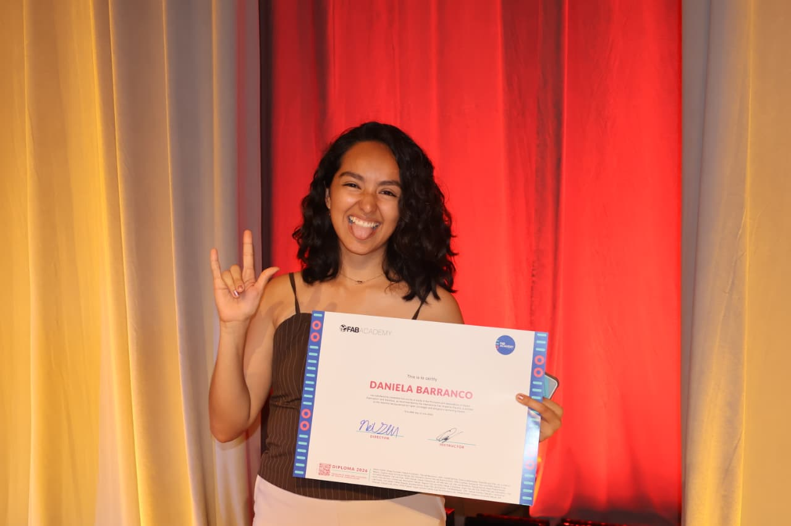

En esta sección encontrarás un poco más sobre mi trayectoria y pasión

Hola, soy Dani. Siempre me he visto como un hada artesana, igual que Campanita:
Si no lo tengo, ¡lo invento!
¡Mentalidad maker, visión de negocio!
Creo firmemente que saber cómo fabricar una idea es tan importante como saber comunicarla y venderla. Así llegamos a más personas, porque una sola persona puede realmente cambiar el mundo.
Aquí puedes encontrar mi Syllabus
Transformando ideas en prototipos tangibles usando diversas herramientas y técnicas. Desde corte láser hasta impresión 3D y electrónica, le doy vida a los conceptos con precisión y creatividad.
Creando diseños hermosos y funcionales que resuelven problemas reales. Me enfoco en principios de diseño centrado en el usuario combinados con experiencia técnica en ingeniería para ofrecer soluciones innovadoras.
Construyendo sitios web responsivos e intuitivos y experiencias digitales que enganchan a los usuarios. Combino un diseño limpio con buenas prácticas de programación para crear plataformas en línea fluidas.
Desarrollando estrategias de negocio y llevando productos al mercado. Entiendo cómo convertir la innovación técnica en modelos de negocio viables que generen un impacto real.